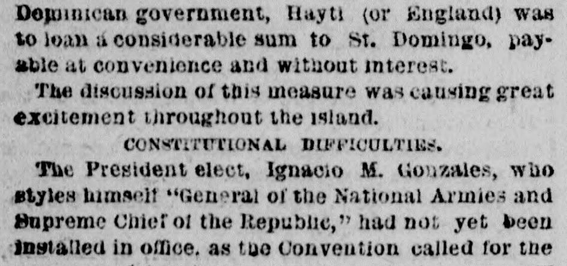

 See the full pageVer la página completa
See the full pageVer la página completa
Original title in EnglishTítulo original en inglés
ST. DOMINGO.; British Diplomacy and Royalist Intrigue Against American Interests.; The Samana Bay Company's Charter Annulled by the Executive.; Proclamation of the President Elect--The Fact Officially Announced to the People.; Return of the American Commissioners.; What Governor Fabens Says on the Subject.; Paper Money and a Poor Prospect for Trade.SANTO DOMINGO.; Diplomacia británica e intriga realista contra los intereses estadounidenses.; La carta constitutiva de la Compañía de la Bahía de Samaná anulada por el Ejecutivo.; Proclama del Presidente Electo--El hecho anunciado oficialmente al pueblo.; Retorno de los comisionados estadounidenses.; Lo que dice el gobernador Fabens sobre el asunto.; Papel moneda y una pobre perspectiva para el comercio.
Based on the provided newspaper excerpt, the president-elect, Ignacio M. Gonzales, had not yet been installed because a constitutional convention had not agreed on its articles. The Special Commission of the Samana Bay Company failed to reach an amicable settlement with the government over pending accounts, leading the provisional government to declare the Samana Bay Convention null and void. In response, the Commissioners protested the act, demanded arbitration, and planned to call upon the United States government for protection against violent proceedings by Dominican authorities.A partir del extracto periodístico provisto, el presidente electo, Ignacio M. González, aún no había asumido el cargo debido a que una convención constituyente no había acordado su articulado. La comisión especial de la Samana Bay Company no logró alcanzar un arreglo amistoso con el gobierno sobre las cuentas pendientes, lo que llevó al gobierno provisional a declarar nula y sin valor la convención de la bahía de Samaná. En respuesta, los comisionados protestaron contra dicha medida, exigieron un arbitraje y manifestaron su intención de solicitar la protección del gobierno de los Estados Unidos frente a las actuaciones violentas de las autoridades dominicanas.
FULL TEXT:TRADUCCIÓN:
The United States mail steamship Tybee, Captain Delanoy, from St. Domingo 30th ult. at this port reports the following important intelligence:—El vapor correo de los Estados Unidos Tybee, capitán Delanoy, procedente de Santo Domingo el 30 del pasado, en este puerto informa la siguiente importante noticia:—
Soon after leaving Samana Bay the Tybee fell in with the Dominican man-of-war Capotillo, bound in.Poco después de salir de la Bahía de Samaná, el Tybee se encontró con el buque de guerra dominicano Capotillo, que entraba.
BRITISH DIPLOMACY AND TREATY MAKING.DIPLOMACIA BRITÁNICA Y CONFECCIÓN DE TRATADOS.
Mr. St. John, British Consul General at Port au Prince, had been on a tour of observation to Samana Bay in Her Majesty's ship Woodlark, where he spent several days in informing himself as to the great natural advantages of the position, and had afterwards visited St. Domingo with propositions from the Haytian government for a treaty between the two republics. Among the conditions of the proposed treaty, it is said, were the cession to Hayti of the disputed territory on the frontier and the annulment of the Samana Bay Convention, made with citizens of the United States. These conditions being admitted by the Dominican government, Hayti (or England) was to loan a considerable sum to St. Domingo, payable at convenience and without interest.El Sr. St. John, Cónsul General británico en Puerto Príncipe, había estado en una gira de observación a la Bahía de Samaná en el buque de Su Majestad Woodlark, donde pasó varios días informándose de las grandes ventajas naturales de la posición, y después había visitado Santo Domingo con proposiciones del gobierno haitiano para un tratado entre las dos repúblicas. Entre las condiciones del tratado propuesto, se dice, estaban la cesión a Haití del territorio disputado en la frontera y la anulación de la Convención de la Bahía de Samaná, hecha con ciudadanos de los Estados Unidos. Admitidas estas condiciones por el gobierno dominicano, Haití (o Inglaterra) prestaría una suma considerable a Santo Domingo, pagadera a conveniencia y sin interés.
The discussion of this measure was causing great excitement throughout the island.La discusión de esta medida estaba causando gran excitación en toda la isla.
CONSTITUTIONAL DIFFICULTIES.DIFICULTADES CONSTITUCIONALES.
The President elect, Ignacio M. Gonzalez, who styles himself "General of the National Armies and Supreme Chief of the Republic," had not yet been installed in office, as the Convention called for the purpose of framing a new constitution was still unable to agree upon the articles thereof.El Presidente electo, Ignacio M. González, que se titula a sí mismo «General de los Ejércitos Nacionales y Jefe Supremo de la República», aún no había sido instalado en el cargo, pues la Convención convocada con el propósito de redactar una nueva constitución aún no podía ponerse de acuerdo sobre los artículos de la misma.
THE SAMANA BAY COMPANY IN A DIFFICULTY.LA COMPAÑÍA DE LA BAHÍA DE SAMANÁ EN UNA DIFICULTAD.
The Special Commission of the Samana Bay Company, composed of Dr. Samuel G. Howe, of Boston; Captain Samuels, of Dreadnaught celebrity, and Governor Fabens, of Samana, have not succeeded in obtaining an amicable settlement of the question pending between the government and the Company, including outstanding and overdue accounts against the government, and the provisional government has declared the Samana bay Convention null and void.La Comisión Especial de la Compañía de la Bahía de Samaná, compuesta por el Dr. Samuel G. Howe, de Boston; el capitán Samuels, de la celebridad del Dreadnaught, y el gobernador Fabens, de Samaná, no ha logrado obtener un arreglo amistoso de la cuestión pendiente entre el gobierno y la Compañía, incluyendo cuentas pendientes y vencidas contra el gobierno, y el gobierno provisional ha declarado la Convención de la bahía de Samaná nula y sin valor.
AN APPEAL TO WASHINGTON.UN LLAMAMIENTO A WASHINGTON.
The Commissioners have protested against this summary act as arbitrary and illegal, and, on being instigated by British-Haytian influence, demanded an arbitration upon the matters in dispute according to the terms of the Convention. The company will, in the meantime, call upon the United States government for protection against any violent proceedings on the part of the Dominican authorities.Los Comisionados han protestado contra este acto sumario como arbitrario e ilegal, y, por haber sido instigado por la influencia británico-haitiana, han demandado un arbitraje sobre los asuntos en disputa según los términos de la Convención. La compañía, mientras tanto, acudirá al gobierno de los Estados Unidos por protección contra cualquier procedimiento violento por parte de las autoridades dominicanas.
The inhabitants of Samana, most of whom are Americans or of American descent, were at first greatly incensed against the Gonzalez government on receipt of the news of the annulment of the lease, and declared their determination to resist any attempt at enforcing it. The Commissioners explained to them that such a course would retard and perhaps defeat a just and equitable settlement of the question, and enjoined upon them to deport themselves in a peaceable manner, to pay their taxes, and, if necessary, to pay them under protest.Los habitantes de Samaná, la mayoría de los cuales son estadounidenses o de descendencia estadounidense, estuvieron al principio grandemente indignados contra el gobierno de González al recibir la noticia de la anulación del arrendamiento, y declararon su determinación de resistir cualquier intento de hacerlo cumplir. Los Comisionados les explicaron que tal curso retardaría y quizás derrotaría un arreglo justo y equitativo de la cuestión, y les encargaron que se comportaran de manera pacífica, que pagaran sus impuestos, y, si fuera necesario, que los pagaran bajo protesta.
The paper money of the Gonzalez government was being issued in large quantities, and was already at a discount of 50 per cent. Business was entirely suspended, and the prospect for trade was very poor.El papel moneda del gobierno de González estaba siendo emitido en grandes cantidades, y ya estaba a un descuento del 50 por ciento. Los negocios estaban enteramente suspendidos, y la perspectiva para el comercio era muy pobre.
ex-President Baez is making efforts to get back to power, and intends establishing a paper in St. Thomas to advocate his cause.El ex Presidente Báez está haciendo esfuerzos para volver al poder, y se propone establecer un periódico en Santo Tomás para abogar por su causa.
WHAT GOVERNOR FABENS SAYS.LO QUE DICE EL GOBERNADOR FABENS.
Governor Fabens—ex-President Baez is a warm friend of the United States, and is desirous to promote the annexation of St. Domingo to this country. Baez is the representative of American ideas and Gonzales is not, the latter being strongly imbued with Haytian-English proclivities. Now, with reference to what you ask about Baez and the news from St. Domingo, I cannot tell you, for I have, as you know, just landed from my trip.El Gobernador Fabens—el ex Presidente Báez es un amigo caluroso de los Estados Unidos, y está deseoso de promover la anexión de Santo Domingo a este país. Báez es el representante de las ideas estadounidenses y González no lo es, estando este último fuertemente imbuido de proclividades haitiano-inglesas. Ahora, con referencia a lo que pregunta acerca de Báez y las noticias de Santo Domingo, no puedo decirle, pues, como sabe, acabo de desembarcar de mi viaje.
REPORTER—Governor, do you find the Americans in your troubles, seeing that there is no established government in St. Domingo?EL REPORTERO—Gobernador, ¿encuentra a los estadounidenses en sus problemas, viendo que no hay gobierno establecido en Santo Domingo?
GOVERNOR FABENS—Well (musingly) I think the United States government ought to step in and aid, in answer to our appeal, and we rely upon it to protect our interests against any over-acts of the Dominican authorities.EL GOBERNADOR FABENS—Bueno (meditabundo) creo que el gobierno de los Estados Unidos debería intervenir y ayudar, en respuesta a nuestro llamamiento, y confiamos en él para proteger nuestros intereses contra cualquier acto excesivo de las autoridades dominicanas.
The Proclamation Annulling the Contract.La Proclama que Anula el Contrato.
IGNACIO MARIA GONZALEZ, General of the National Armies, &c.:—IGNACIO MARIA GONZALEZ, General de los Ejércitos Nacionales, etc.:—
Whereas, in conformity with article 10 of the contract for the lease of the peninsula and bay of Samana and its islets, made in the city of St. Domingo, on the 28th of December, 1872, between the Minister of the Interior and Police and Foreign Relations, Citizens Manuel Maria Gautier and Messrs. Samuel Samuels, T. Scott Stewart and Burton S. Harrison, Commissioners of the Company styled "The Samana Bay Company," and by decree dated 19th February, 1873, of the Dominican Executive is called the "Samana Bay Company of St. Domingo," it was stipulated and decreed that the amount of rent fixed at $150,000 annually should be paid each year in advance on the 1st day of January;Considerando que, en conformidad con el artículo 10 del contrato para el arrendamiento de la península y la bahía de Samaná y sus islotes, hecho en la ciudad de Santo Domingo, el 28 de diciembre de 1872, entre el Ministro del Interior y Policía y Relaciones Exteriores, los Ciudadanos Manuel Maria Gautier y los Sres. Samuel Samuels, T. Scott Stewart y Burton S. Harrison, Comisionados de la Compañía titulada «The Samana Bay Company», y por decreto fechado el 19 de febrero de 1873, del Ejecutivo dominicano llamada la «Samana Bay Company of St. Domingo», fue estipulado y decretado que la cantidad de renta fijada en $150,000 anuales debería pagarse cada año por adelantado el 1 de enero;
Whereas, according to article 11 of the aforesaid contract, the non-payment of the annual rent at the time fixed upon, and, in case of war or other circumstance of force majeure, finally proven one month after that date at furthest, incurs the rescinding of the Convention, it being so expressly stipulated;Considerando que, según el artículo 11 del contrato antedicho, la falta de pago de la renta anual en el momento fijado, y, en caso de guerra u otra circunstancia de fuerza mayor, finalmente probada un mes después de esa fecha a más tardar, incurre en la rescisión de la Convención, estando así estipulado expresamente;
Whereas, when the provisional government, under date of 2d of December, 1873, ordered the withholding of the annual payment due on the 1st January of the present year, because, in virtue of the proclamation of the 25th of November previous, it had ignored the authority of General Baez, it did so solely with the object of avoiding future difficulties with the company if it should pay the late administration;Considerando que, cuando el gobierno provisional, con fecha del 2 de diciembre de 1873, ordenó la retención del pago anual debido el 1 de enero del presente año, porque, en virtud de la proclama del 25 de noviembre anterior, había ignorado la autoridad del general Báez, lo hizo solamente con el objeto de evitar dificultades futuras con la compañía si pagara a la difunta administración;
Whereas, in the official notice that it gave to the company, on the above mentioned date of 2d December, the Provisional government assured the company that it would respect the Samana Bay Company convention so far as it should be in the interest of the country and the conditions that were being fulfilled;Considerando que, en el aviso oficial que dio a la compañía, en la fecha arriba mencionada del 2 de diciembre, el gobierno Provisional aseguró a la compañía que respetaría la convención de la Compañía de la Bahía de Samaná en la medida en que estuviera en el interés del país y las condiciones que se estuvieran cumpliendo;
Whereas the company, through its Vice President, Mr. Paul Spofford, under date of 13th January of the present year, advises the Minister of Foreign Relations that the annual payment has been withheld, thus conforming to the order of the said Minister, while at the same time he states that he is awaiting official communications upon the subject;Considerando que la compañía, por medio de su Vicepresidente, el Sr. Paul Spofford, con fecha del 13 de enero del presente año, avisa al Ministro de Relaciones Exteriores que el pago anual ha sido retenido, conformándose así a la orden de dicho Ministro, mientras que al mismo tiempo afirma que está esperando comunicaciones oficiales sobre el tema;
Whereas, in virtue of the advice to which the preceding paragraph refers, the Treasury Department, by resolution of the government and by order of the Secretary of the Treasury, drew in favor of several merchants of the capital and the Minister of Foreign Affairs and Finance drafts for the sum of $147,224.14, on account of the rent due since the 1st of last January, the said drafts being presented for acceptance, and the company, in the meantime, told the government that they would not be accepted;Considerando que, en virtud del aviso a que se refiere el párrafo precedente, el Departamento de Hacienda, por resolución del gobierno y por orden del Secretario de Hacienda, giró en favor de varios comerciantes de la capital y del Ministro de Relaciones Exteriores y Hacienda letras por la suma de $147,224.14, a cuenta de la renta debida desde el 1 de enero pasado, siendo dichas letras presentadas para su aceptación, y la compañía, mientras tanto, dijo al gobierno que no serían aceptadas;
Whereas at the time the government drew against the company it gave it official notice of its establishment in this capital, and through the Minister of Foreign Affairs and Finance granted the company a prolongation, responding to the annual rental due, the reasons which until then it might have had for withholding the payment;Considerando que al momento en que el gobierno giró contra la compañía le dio aviso oficial de su establecimiento en esta capital, y por medio del Ministro de Relaciones Exteriores y Hacienda concedió a la compañía una prolongación, respondiendo a la renta anual debida, de las razones que hasta entonces pudiera haber tenido para retener el pago;
Whereas the non-payment of the amount said in advance is a sufficient cause for declaring the convention rescinded, as stipulated in the eleventh clause of the same, there being no cause on the part of the company for its inability to withhold the payment at the time mentioned;Considerando que la falta de pago de la cantidad dicha por adelantado es causa suficiente para declarar la convención rescindida, como se estipula en la cláusula undécima de la misma, no habiendo causa por parte de la compañía para su incapacidad de retener el pago en el momento mencionado;
Whereas the propositions that, verbally and in writing, have been made to the government on the 21st, 23d and 24th of the present month by the Commissioners, Samuel Samuels and Samuel G. Howe, in the name of the company, tending to modify the contract, grant extensions for the payment of the rent and to reduce the amount of said rent, are not and cannot be accepted by the government, since they would impose upon the nation a responsibility from which it could not release itself;Considerando que las proposiciones que, verbalmente y por escrito, han sido hechas al gobierno los días 21, 23 y 24 del presente mes por los Comisionados, Samuel Samuels y Samuel G. Howe, en nombre de la compañía, tendientes a modificar el contrato, conceder extensiones para el pago de la renta y reducir la cantidad de dicha renta, no son ni pueden ser aceptadas por el gobierno, ya que impondrían a la nación una responsabilidad de la cual no podría liberarse;
Whereas the Dominican government, in virtue of the communication of the 10th of January, signed by the Vice President of the company, and of the perfect right that it has as a depositor to the rent due, ought to consider said rent paid, and as such it was accepted by the government when it drew against the company, which reason it drew a portion for the amount of $147,224, and the drafts having been presented for non-acceptance, costs and damages are due, apart from the liquidation of the respective accounts of reclamation;Considerando que el gobierno dominicano, en virtud de la comunicación del 10 de enero, firmada por el Vicepresidente de la compañía, y del perfecto derecho que tiene como depositario de la renta debida, debía considerar dicha renta pagada, y como tal fue aceptada por el gobierno cuando giró contra la compañía, por cuya razón giró una porción por la cantidad de $147,224, y habiendo sido las letras presentadas por no aceptación, se deben costas y daños, aparte de la liquidación de las respectivas cuentas de reclamación;
Whereas the company called the "Samana Bay Company of St. Domingo" has enjoyed the advantages of the lease of said bay, peninsula and keys for the time elapsed since the last payment, it is not allowed, up until the date of this decree, making use of the benefits which said lease may have produced;Considerando que la compañía llamada la «Samana Bay Company of St. Domingo» ha disfrutado de las ventajas del arrendamiento de dicha bahía, península y cayos por el tiempo transcurrido desde el último pago, no le está permitido, hasta la fecha de este decreto, hacer uso de los beneficios que dicho arrendamiento pueda haber producido;
Whereas, according to the terms of the mentioned eleventh clause of the convention, the right is reserved to the Dominican government of declaring null or rescinding the contract whenever the company fails to make the payment of the rent;Considerando que, según los términos de la mencionada cláusula undécima de la convención, se reserva el derecho al gobierno dominicano de declarar nulo o rescindir el contrato cuandoquiera que la compañía falte en hacer el pago de la renta;
Whereas the government, after having taken into account the opinion of the Council of the Secretaries of State and the Council of the Government, has decreed and does hereby decree:—Considerando que el gobierno, después de haber tomado en cuenta la opinión del Consejo de los Secretarios de Estado y el Consejo del Gobierno, ha decretado y por el presente decreta:—
ARTICLE 1.—The convention made in this city, under date of 28th of December, 1872, between the Dominican government and the company entitled the "Samana Bay Company of St. Domingo," for the lease of the peninsula and bay of Samana and of the islands and quays in those waters, is and is hereby declared from this date, in virtue of the non-fulfillment of its conditions in all its parts and null and of no value nor effect.ARTÍCULO 1.—La convención hecha en esta ciudad, con fecha del 28 de diciembre de 1872, entre el gobierno dominicano y la compañía titulada la «Samana Bay Company of St. Domingo», para el arrendamiento de la península y la bahía de Samaná y de las islas y cayos en esas aguas, es y por el presente se declara desde esta fecha, en virtud del incumplimiento de sus condiciones en todas sus partes, nula y de ningún valor ni efecto.
ART. 2. The Peninsula and Bay of Samana and the islands and keys of its waters will again from this date, as before the celebration of the Convention of the 28th of December, 1872, be ruled by the Dominican laws and authorities in the same form and manner as the provinces and districts of the Republic and islands adjacent to its territory.ART. 2. La Península y la Bahía de Samaná y las islas y cayos de sus aguas volverán desde esta fecha, como antes de la celebración de la Convención del 28 de diciembre de 1872, a ser regidas por las leyes y autoridades dominicanas en la misma forma y manera que las provincias y distritos de la República y las islas adyacentes a su territorio.
ART. 3. The company will make good the amount of the account of damages incurred through the bills protested through its fault, and what concessions to the portion of the rent due since the first of January up to the date of this decree for the time that it has had the control of the said bay, peninsula and keys, until the same date.ART. 3. La compañía pagará la cantidad de la cuenta de daños incurridos por las letras protestadas por su culpa, y qué concesiones a la porción de la renta debida desde el primero de enero hasta la fecha de este decreto por el tiempo que ha tenido el control de dicha bahía, península y cayos, hasta la misma fecha.
ART. 4. The respective departments charged with the direction of the different branches of public administration will name the authorities that are to be installed in the peninsula and bay of Samana, and will take the necessary measures for the fulfillment of this decree.ART. 4. Los respectivos departamentos encargados de la dirección de las diferentes ramas de la administración pública nombrarán las autoridades que han de ser instaladas en la península y la bahía de Samaná, y tomarán las medidas necesarias para el cumplimiento de este decreto.
Given in the National Palace of St. Domingo, the 25th of March, 1874, the 31st year of the Independence and the 11th of the Restoration.Dado en el Palacio Nacional de Santo Domingo, el 25 de marzo de 1874, el 31.ᵉʳ año de la Independencia y el 11.ᵒ de la Restauración.
(Signed) IGNACIO MARIA GONZALEZ.(Firmado) IGNACIO MARIA GONZALEZ.
Countersigned:—Refrendado:—
The Minister of the Interior and Police, (Signed) P. G. ESPAILLAT.El Ministro del Interior y Policía, (Firmado) P. G. ESPAILLAT.
The Minister of Foreign Relations, (Signed) J. DE LA C. ALFAU.El Ministro de Relaciones Exteriores, (Firmado) J. DE LA C. ALFAU.
The Minister of Justice and Public Instruction, (Signed) T. C. DE CASTRO.El Ministro de Justicia e Instrucción Pública, (Firmado) T. C. DE CASTRO.
The Minister of Finance and Commerce, (Signed) J. M. COHEN.El Ministro de Hacienda y Comercio, (Firmado) J. M. COHEN.
The Minister of War and Marine, (Signed) M. M. CASTILLO.El Ministro de Guerra y Marina, (Firmado) M. M. CASTILLO.
The New York Herald. New York, April 7, 1874. Page 7.